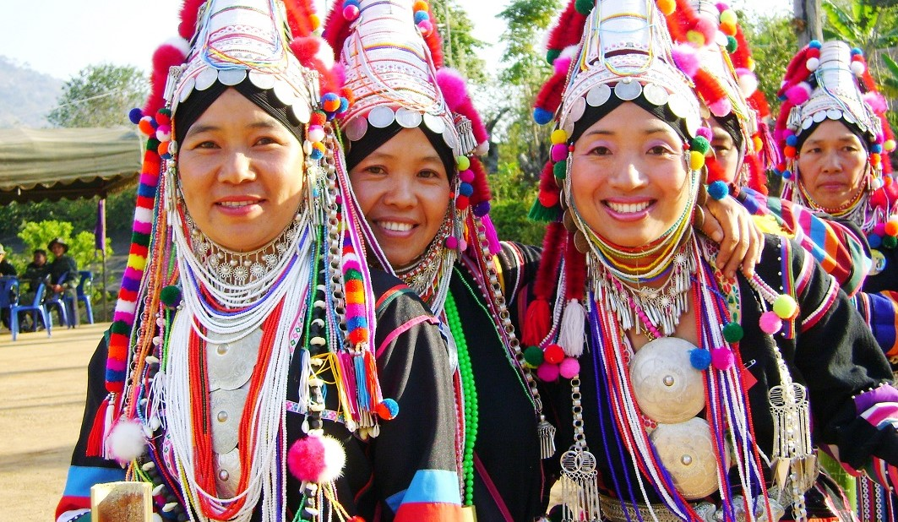
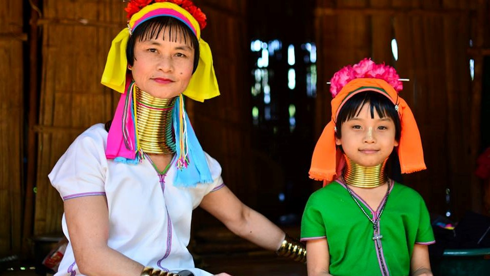

ชาติพันธุ์

ชนเผ่าม้ง(Hmong) ได้เข้ามาตั้งรกรากถิ่นฐานอยู่ในเขตภูเขาสูงในภาคเหนือของประเทศไทยตั้งแต่ก่อนปี พ.ศ. 2480 ปัจจุบันมีชาวม้งตั้งถิ่นฐานอยู่ใน
13 จังหวัดทางภาคเหนือของประเทศไทย ได้แก่ เชียงใหม่ เชียงราย แม่ฮ่องสอน ลำปาง พะเยา แพร่ น่าน สุโขทัย ตาก กำแพงเพชร พิษณุโลก เพชรบูรณ์ และเลย
มีหมู่บ้านม้งทั้งสิ้นกว่า 250 หมู่บ้าน จำนวนประชากรมากกว่า 150,000 คน
ชนเผ่าอาข่า (Akha) มีถิ่นฐานเดิมอยู่ที่บริเวณภูเขาสูงทางทิศตะวันออกเฉียงเหนือและตะวันตกเฉียงใต้ของประเทศจีน ปัจจุบันชาวอาข่ามีประชากรอาศัยอยู่หนาแน่นที่บริเวณ
มณฑณยูนนานของประเทศจีน โดยเฉพาะแคว้นสิบสองปันนา นอกจากนี้ยังมีประชากรชาวอาข่ากระจายอยู่ในประเทศต่าง ๆ บริเวณเอเชียตะวันออกเฉียงใต้ ได้แก่ ประเทศลาว
พม่า เวียดนามและไทย ซึ่งมีประชากรโดยรวมทั่วโลกประมาณ 8 แสนคน ชนเผ่าอาข่าได้เคลื่อนย้ายเข้ามาสู่ประเทศไทยเมื่อประมาณ 120 ปีที่แล้ว กระจายอยู่ในพื้นที่ 7 จังหวัด
ทางภาคเหนือของไทย ได้แก่ จังหวัดเชียงราย เชียงใหม่ พะเยา ลำปาง แพร่ ตากและเพชรบูรณ์ มีจำนวนประชากรในประเทศไทยประมาณ 70,000 คน อาศัยอยู่มากที่สุดใน
จังหวัดเชียงราย


ชนเผ่ากะเหรี่ยง หรือ ปกาเกอะญอ (Karen) กระจายตัวตั้งอยู่ในพื้นที่ต่าง ๆ (ซึ่งส่วนใหญ่เป็นเขตป่าในความหมายของรัฐ) ของ 15 จังหวัดคือ ในภาคเหนือมี 9 จังหวัด
ได้แก่ เชียงราย แม่ฮ่องสอน เชียงใหม่ ลำพูน ลำปาง ตาก กำแพงเพชร แพร่ และสุโขทัย ในภาคกลางทางด้านตะวันตกมี 6 จังหวัด ได้แก่อุทัยธานี สุพรรณบุรี กาญจนบุรี
ราชบุรี เพชรบุรี และประจวบคีรีขันธ์ รวมประชากรทั้งหมดที่สำรวจในปี พ.ศ.2545 จำนวน 352,902 คน